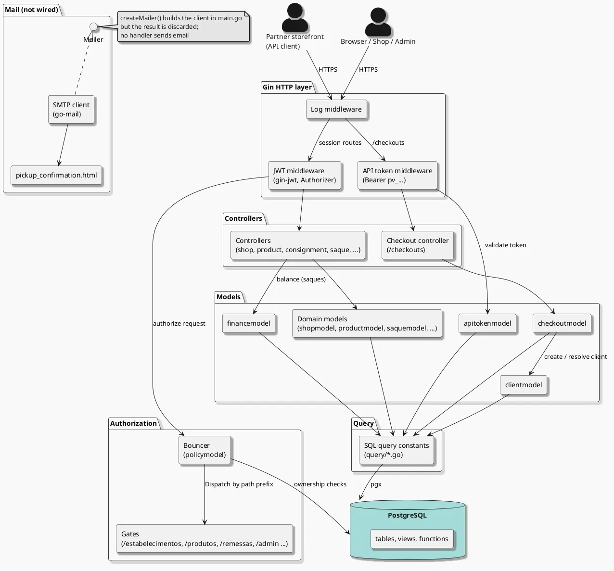
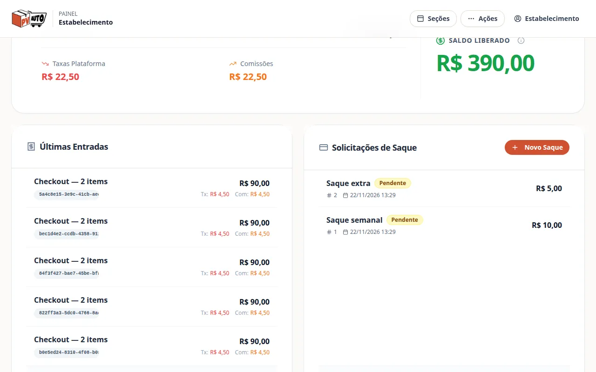

- Role
- Backend author and the agent workflow around it; storefront frontend by Gabriel and Kerlon
- When
- Mar – Jun 2026
- Stack
- Go, Gin, pgx/v5, PostgreSQL, gin-jwt, shopspring/decimal
What it is
A rewrite of an earlier Laravel backend. It covers the catalogue, consignments, checkout, stock reservation, per-shop earnings and withdrawals with admin approval. Requests go through Gin middleware, a controller, a model that owns the transaction, and plain SQL strings run through a pgx pool. No ORM.


Design decisions
- SQL in the open, transactions in the model. Every lock and every
WHEREis visible in review, and one function holds one invariant fromBEGINtoCOMMIT. - Lock the row that owns the rule. The client row for rate limits, package rows for stock, the shop row for balance. Requests for the same client or shop queue up; unrelated ones don't.
- Freeze money at write time. Each checkout stores the shop's value, tax and commission, so later price changes never rewrite earnings. Money is
decimal, never float. - Checkout idempotency took three tries. A client-supplied key mixed up two jobs; a content hash had no notion of time, so buying the same thing a week later returned the old QR code; the current version locks the client row and answers a second checkout within 60 s with 429.
Code
The third version of checkout deduplication. The client row is locked first, then the last checkout time decides:
LockClientRowQuery = `
SELECT id FROM clients WHERE id = $1 FOR UPDATE
` CheckRateLimitQuery = `
SELECT EXTRACT(EPOCH FROM (NOW() - chk.processed_at))::bigint AS seconds_ago
FROM checkouts chk
WHERE chk.client_id = $1
ORDER BY chk.processed_at DESC
LIMIT 1
`// checkRateLimit queries the most recent checkout for this client and
// returns the remaining seconds and whether the request is blocked.
func checkRateLimit(
ctx context.Context,
tx pgx.Tx,
clientID int,
) (remaining int, isBlocked bool, err error) {
var secondsAgo *int64
err = tx.QueryRow(ctx, query.CheckRateLimitQuery, clientID).Scan(&secondsAgo)
if errors.Is(err, pgx.ErrNoRows) {
// No previous checkout — not blocked
return 0, false, nil
}
if err != nil {
return 0, false, fmt.Errorf("failed to check rate limit: %w", err)
}
if secondsAgo == nil || *secondsAgo >= int64(RateLimitWindowSeconds) {
return 0, false, nil
}
remaining = RateLimitWindowSeconds - int(*secondsAgo)
return remaining, true, nil
}History
Numbers from the README, per month of 2026:
| Month | Commits | Migrations (total) | HTTP test suites (total) |
|---|---|---|---|
| Mar | 109 | 7 | 0 |
| Apr | 94 | 9 | 1 |
| May | 215 | 31 | 17 |
| Jun | 71 | 53 | 19 |
From late May I ran it with coding agents: 64 written specs, guardrails in AGENTS.md, and skills for tests and diagrams. I wrote the specs and the guardrails; the agents implemented them under tests. The 19 test suites run black-box HTTP requests against a real PostgreSQL.
More pictures


